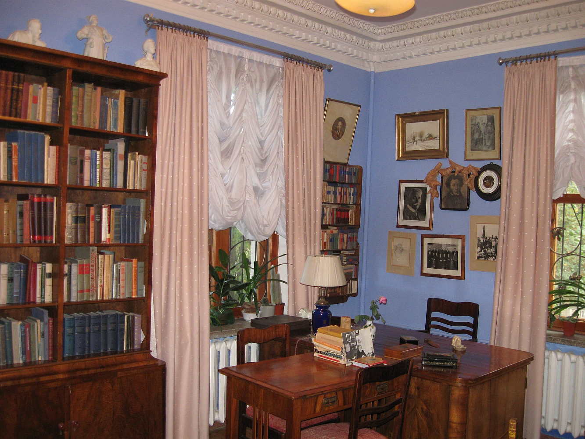
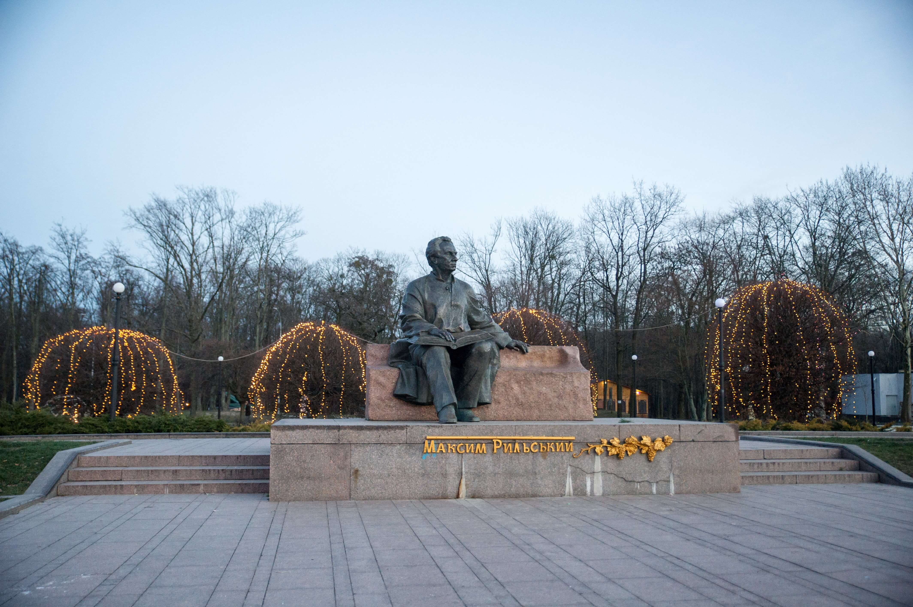
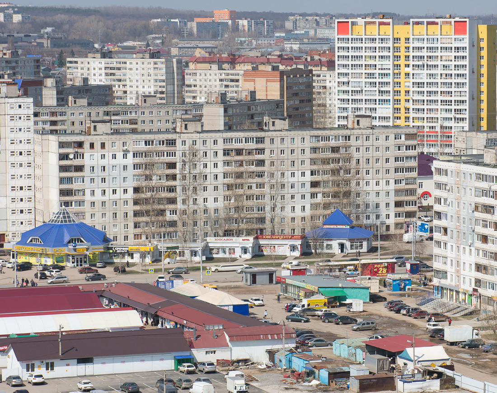
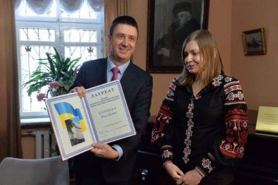

Рідна вулиця поета тепер має його ім'я
Цікавим є факт: у 1965 році вулиця Радянська, саме та, де стоїть, будинок Максима Рильського, була перейменована на честь поета. А поруч зі входом у Голосіївський парк, що знаходиться неподалік від неї, було встановлено пам’ятник Максиму Рильському.

Ще більше вулиць, названих на честь М. Рильського
Крім цього, вулиці, названі на честь М.Рильського, є ще в Житомирі, Чернігові, Яготині (Київська обл.), Лютежі (Київська обл.), Гореничах (Київська обл.), Ірпіні (Київська обл.), Острі (Чернігівська обл.), Руській Поляні (Черкаська обл.), Дібровцях (Черкаська обл.), Каневі (Черкаська обл.), Черкасах, Бережанах (Тернопільска обл.), Ходореві (Львівська обл.) та ще багатьох інших містах та селах України.Іменем поета названо навіть пароплав на Дніпрі.

Премія імені Максима Рильського
Максим Рильський справді був генієм перекладу: він вільно володів 13 мовами, перекладав із 30, деякий час викладав в Українському інституті лінгвістичної освіти. Саме тому в 1972 році було засновано щорічну премію імені Максима Рильського за найкращий художній переклад. Саме цю премію отримала Ніна Баликова — українська перекладачка з японської, аспірантка Інституту філології та випускниця ліцею "Наукова зміна", який закінчила з медаллю.
